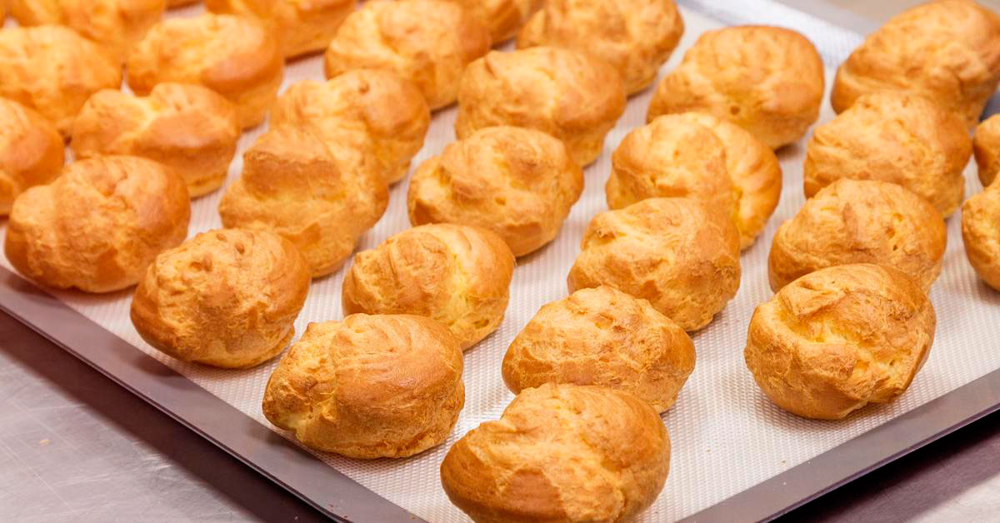

Заварное тесто


В заварном тесте содержиться достаточно большое количество жидкости,
благодаря чему это тесто при выпекании сильно разбухает, образуя внутри большую
полость, которую удобно наполнять разнообразными начинками.
Ингредиенты
- Пшеничная мука - 150 гр
- Щепотка соли
- Яйца 4 шт (слегка растереть)
- Холодная вода - 300 мл
- Сливочное масло - 125 гр (нарезать мелким кубиком)
Способ приготовления
- Просейте дважды на лист пергаментной бумаги муку с солью. Если в кухне сыро, переложите лист
с мукой в теплое место, чтобы смесь чуть подсохла.
- Вскипятите масло с водой в кастрюле, после чего всыпьте с листа сразу всю просеянную муку
с солью. Взбивайте массу миксером или деревянной ложкой на слабом огне, пока тесто не начнет
отходить от стенок посуды.
- Дайте остыть 10 минут, после чего вводите порциями растертые яйца. Каждый раз вымешивайте тесто
так, чтобы оно становилось гладким и однородным, но оставалось достаточно густым (возможно,
понадобятся не все яйца). Слегка посыпьте мукой полиэтиленовый пакет и положите в него тесто.
Охлождайте 30 минут.
- Разогрейте духовку до 200 °С. Смажьте маслом противень и смочите водой, чтобы в духовке образовался
пар. При помощи двух ложек выложите заварное тесто в виде шариков на противенью Расстояние между изделиями
должно составлять не меньше 5 см. Профитроли выпекайте 20 минут, булочки - 35 минут: они поднимутся и станут
хрустящими и золотистыми.
- Сделайте разрезы на бокой стороне выпеченных изделий, чтобы выпустить пар. Если булочки остались немного
мягкие внутри, поставьте их в духовку на низкой температуре еще на пару минут. Переложие остывать на решетку.
Испеченные изделия можно хранить в морозильной камере почти месяц.

Советы
- Не открывайте дверцу духовки в первые 15 минут
выпекания, иначе изделия не поднимутся.
- Как толлько достанете готовую заварную выпечку
из духовки, сразу же проколите булочки, чтобы
выпустить пар и не дать изделию размокнуть.
- Не наполняйте выпечку начинкой задолго до подачи,
иначе заварное тесто станет мягким.
- Замороженные заварные изделия доведите до
комнатной температуры, потом поставьте на 5 минут
в разогретую до средней температуры духовку,
чтобы булочки стали хустящими. Остудите и
наполните начинкой.
Смотреть на сайте журнала "Изысканная выпечка"